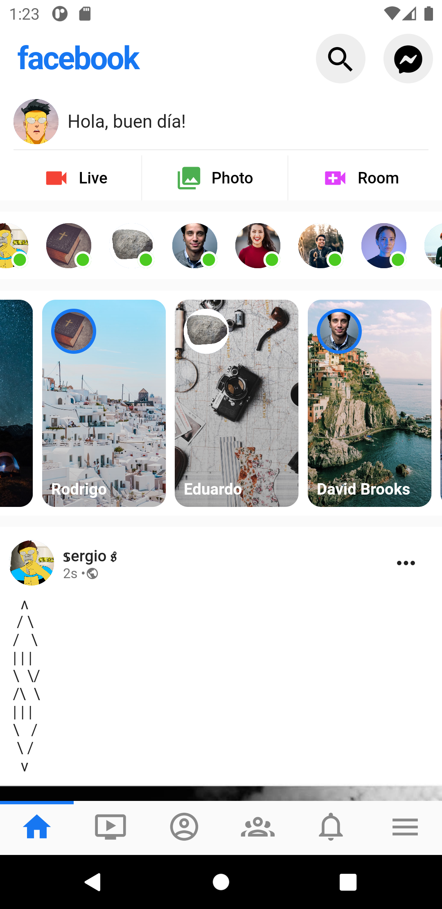
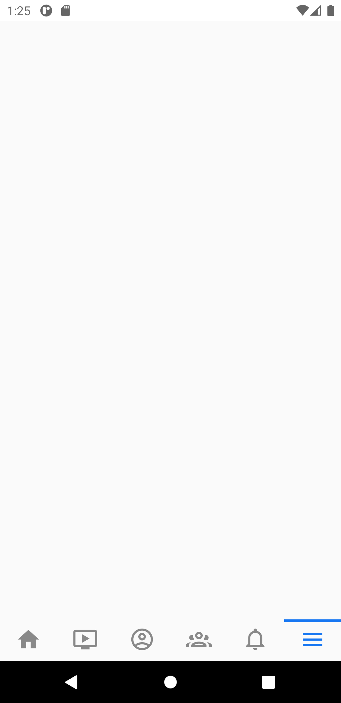
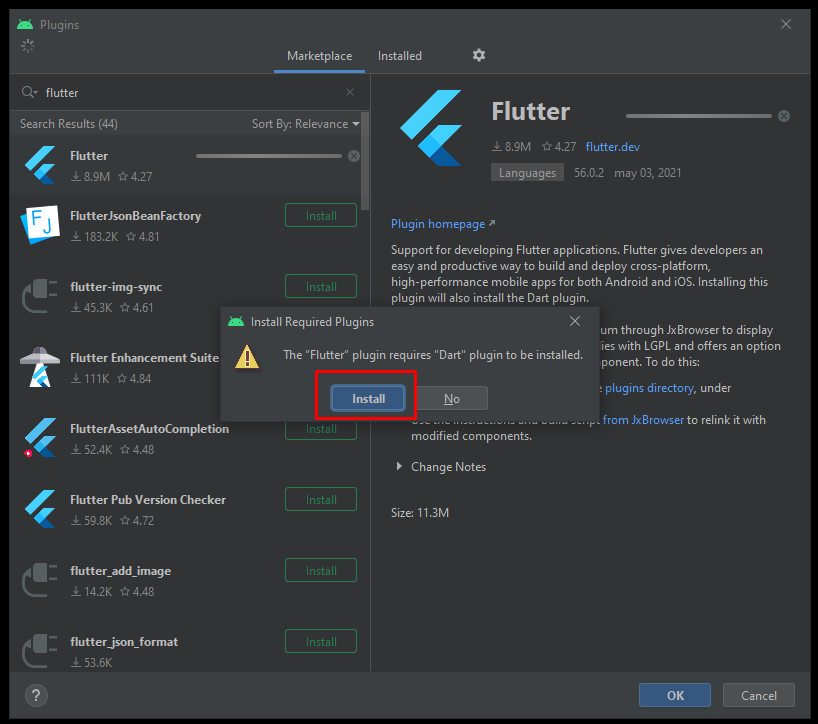
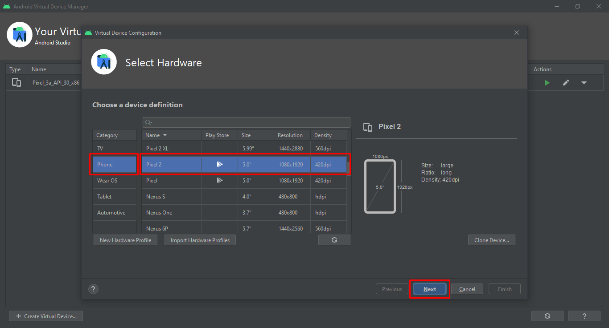
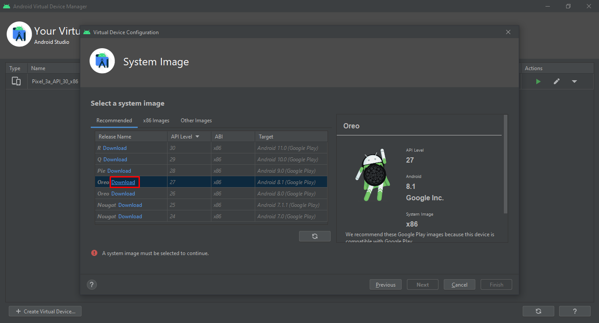
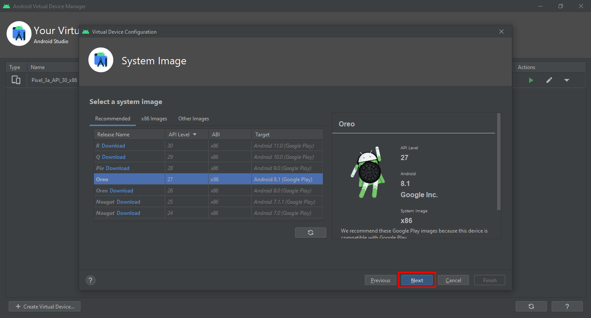
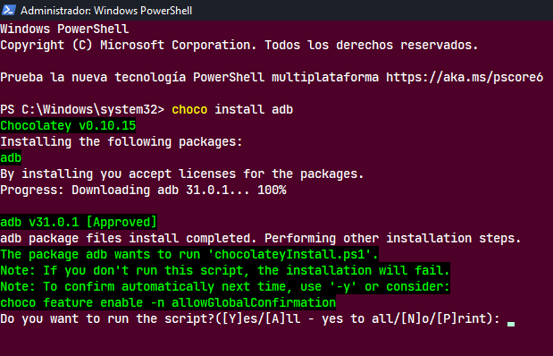
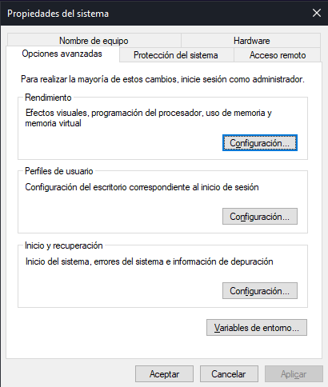
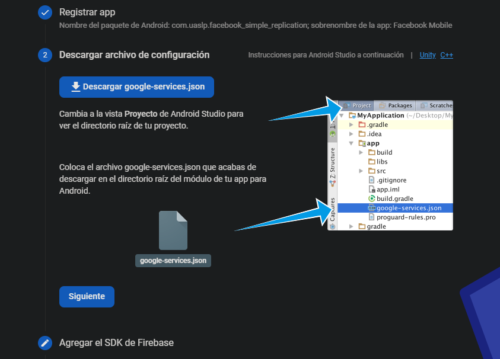
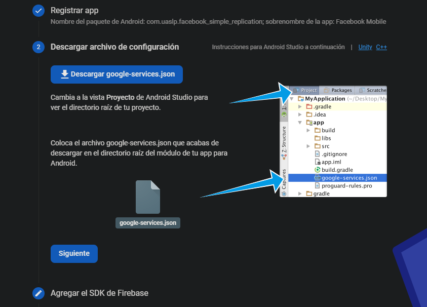

Este es el proyecto que se debió entregar para final del semestre.
- Para esta actividad trabajaremos en equipo Germán y yo.
Es el trabajo para fin de semestre.
Viernes, 11 de junio del 2021, 5PM
Lunes, 14 de JUNIO del 2021
| DESCRIPCIÓN | IMAGEN |
|---|---|
| Requerimientos para la entrega del proyecto | |
El nombre del paquete de la app lo cambié para registrarlo con Firebase, siguiendo la nomenclatura:
com.company.appname
- NOMBRE DEL PAQUETE:
- com.uaslp.facebook_simple_replication
dartdocHay dos pantallas que tenemos como objetivo, pero una es opcional: pantalla de inicio de sesión, y pantalla después de dar click al botón de inicio de sesión.
Pantalla principal de inicio de sesión (los colores se modificaron al exportar desde Photoshop, ya que le quité la imagen original).
| NÚMERO DE PANTALLA | DESCRIPCIÓN DE PANTALLA | IMAGEN DE LA PANTALLA |
|---|---|---|
| 1 | PRIMERA PANTALLA DE INICIO DE SESIÓN CON LOS COLORES MODIFICADOS | |
| 1 | COLORES ORIGINALES DE LA PRIMERA PANTALLA DE INICIO DE SESIÓN | |
| 2 | PANTALLA PARA INICIAR SESIÓN DESPUÉS DE DAR CLICK AL BOTÓN "Log Into Another Account" | |
| 3 | FEED PRINCIPAL DESPUÉS DE HABER INICIADO SESIÓN (LOS ELEMENTOS SON IMPRECISOS RESPECTO A POSICIÓN Y TAMAÑO PORQUE LA IMAGEN FUE EDITADA PARA OCULTAR INFORMACIÓN PERSONAL. NOS BASAMOS EN LA IMAGEN SIN EDITAR.) |
Todas las pantallas que se muestran son del programa ejecutándose en un emulador de Android 11 en Google Pixel 3. Son varias columnas en la imagen para que no se vean tan grandes.
| NÚMERO DE PANTALLA | DESCRIPCIÓN DE PANTALLA | IMAGEN 1 | IMAGEN 2 | IMAGEN 3 |
|---|---|---|---|---|
| 1 | Pantalla prinicipal: Login y datos de usuario. | |||
| 1 | Pantalla prinicipal: Login y datos de usuario. | |||
| 1 | Pantalla prinicipal: Login y datos de usuario. | |||
| 1 | Pantalla prinicipal: Login y datos de usuario. |  |
||
| 1 | Pantalla prinicipal: Login y datos de usuario. | |||
| - | - | - | - | - |
| 2 | Segunda pantalla: Login : Input de datos de usuario. | |||
| 2 | Segunda pantalla: Login : Input de datos de usuario. |  |
 |
|
| 2 | Segunda pantalla: Login : Input de datos de usuario. | |||
| 2 | Segunda pantalla: Login : Input de datos de usuario. | |||
| 2 | Segunda pantalla: Login : Input de datos de usuario. | |||
| 2 | Segunda pantalla: Login : Input de datos de usuario. | - | - | |
| - | - | - | - | - |
| 3 | Tercera y última pantalla: Feed principal -> Crear publicación, ver usuarios conectados, historias y publicaciones. | |||
| 3 | Tercera y última pantalla: Feed principal -> Crear publicación, ver usuarios conectados, historias y publicaciones. | |||
| 3 | Tercera y última pantalla: Feed principal -> Crear publicación, ver usuarios conectados, historias y publicaciones. | |||
| 3 | Tercera y última pantalla: Feed principal -> Crear publicación, ver usuarios conectados, historias y publicaciones. |  | ||
| 3 | Tercera y última pantalla: Feed principal -> Crear publicación, ver usuarios conectados, historias y publicaciones. | |||
| 3 | Tercera y última pantalla: Feed principal -> Crear publicación, ver usuarios conectados, historias y publicaciones. | |||
| 3 | Tercera y última pantalla: Feed principal -> Crear publicación, ver usuarios conectados, historias y publicaciones. | |||
| 3 | Tercera y última pantalla: Feed principal -> Crear publicación, ver usuarios conectados, historias y publicaciones. | |||
| 3 | Tercera y última pantalla: Feed principal -> Crear publicación, ver usuarios conectados, historias y publicaciones. |  | ||
| 3 | Tercera y última pantalla: Feed principal -> Crear publicación, ver usuarios conectados, historias y publicaciones. | - | - |
dartdocEn dart, gracias a un comando llamado dartdoc, es posible generar la
documentación de Dart y Flutter de forma automática, pero hay que
seguir ciertos pasos:
Hay que establecer la siguiente variable de usuario en Path:
C:\SDKs\flutter\bin\cache\dart-sdk\binHay que seguir una convención de comentarios específica para que se generen descripciones en los elementos de la documentación. Estas convenciones se encuentran definidas en Effective Dart: Documentation, en donde lo más importante es lo siguiente:
Los comentarios deben de iniciar con 3 backslashes (\\\) si queremos que aparezca el texto en la documentación. Si lo hacemos con 2 (\\), no saldrá.
Podemos agregar descripciones de archivos, clases, atributos, funciones, y no estoy seguro de si se puede de más cosas, pero eso se puede encontrar en la misma documentación.
Hay ciertas convenciones para que estén estructurados de una mejor forma (según Effective Dart: Documentation), por lo que si quieres saber más al respecto, tendrás que revisar la documentación oficial.
Entrar al directorio inicial de tu aplicación.
cd carpeta_prinicipal_app_flutter
Dentro podrás encontrar (entre otros más) los siguientes directorios:
android/build/ios/lib/
Ejecutar el siguiente comando para activar dartdoc:
flutter pub global activate dartdoc
Ejecutar el siguiente comando para generar la documentación:
dartdoc
Una vez realizados los pasos anteriores, encontraremos la documentación en
formato html junto con más documentos en el siguiente directorio:
carpeta_prinicipal_app_flutter\doc\api\El archivo específico es el siguiente:
carpeta_prinicipal_app_flutter\doc\api\index.html
Para ver la documentación, solamente hay que abrir el archivo y se abrirá una ventana en nuestro navegador. El documento tiene enlaces a los elementos, además de la descripción de cada uno a los que le agregamos con los comentarios en el formato mencionado anteriormente (\\\).
Para que todo funcione correctamente, hay que instalar varias cosas:
Simplemente descarga el archivo que se encuentra en el enlace y ejecutalo. Después podrás configurarlo como tú quieras.
Para que Android Studio y Flutter funcionen de manera correcta, hay que configurar unos elementos que serán obligatorios, siguiendo los siguientes pasos:
Hay una serie de paquetes necesarios para trabajar con Flutter y el emulador de Android, entre otras cosas más.
Abre Android Studio.

Da click en el botón ⚙ Configure.

Abre la ventana de configuraciones del SDK (Software Developer Kit)
dando click en el botón SDK Manager.

Te aparecerá una ventana con la lista de los Android SDK, los cuales te
permitirán desarrollar aplicaciones en ese sistema operativo.

De la lista de SDK Platforms puedes elegir el que quieras, pero en mi
caso tuve que eleguir el Android 8.1 (Oreo) | API Level: 27 porque el
profesor así lo indicó por su estabilidad.
Ahora dirígete a la pestaña de SDK Tools dentro del mismo submenú. Está
a la derecha de la pestaña del paso anterior (SDK Platforms).

Tendrás que seleccionar una serie de elementos (sin quitar la selección de
los seleccionados por default) que te permitirán trabajar con
el desarrollo de tus aplicaciones y el uso del emulador de Android.
Estos elementos son los siguientes:
Google USB Driver

El siguiente elemento depende de tu procesador:
Si tienes un procesador de Intel, selecciona la siguiente opción:
Intel x86 Emulator Accelerator (HAXM Installer)
Si tienes un procesador de AMD, selecciona la siguiente opción:
Android Emulator Hypervisor Driver for AMD Processors (installer)

[OPCIONAL POR SI QUIERES LA ÚLTIMA VERSION (NO ESTABLE) DE ESTE ELEMENTO]
Android SDK Build-Tools 31-rc3 (YO NO LA SELECCIONARÉ, A MENOS QUE
TENGA PROBLEMAS CON LA ÚLTIMA VERSIÓN ESTABLE)
Da click en el botón de la parte inferior derecha que dice
"Show Package Details" para mostrar TODAS las versiones de cada
paquete.
Da click en la última versión del paquete, la cual puede estar hasta o hasta abajo de la lista, dependiendo del orden en el que estén mostrados. Es la versión con los números más altos.

[OPCIONAL POR SI QUIERES PODER UTILIZAR LA LÍNEA DE COMANDOS]
Android SDK Command-line Tools (latest)
Ahora, para que todo sea instalado, da click en el botón "Apply".

Aparecerá una ventana que te pedirá confirmar los cambios. Da click en el
botón "OK".

Aparecerá otra ventana en donde tendrás que aceptar los términos y
condiciones de cada licencia. Acéptalos y da click al botón "Finish".

Después de esto, te mostrará el progreso de instalación de los paquetes.

Una vez terminada la instalación, da click en el botón "Finish".

Ahora da click en el botón "OK".

Para trabajar con Flutter de forma cómoda, hay que instalar una serie de Plugins que nos facilitarán el desarrollo de los programas.
Abre Android Studio.
Da click en el botón ⚙ Configure.
Da click en el botón "Plugins".

Te aparecerá una nueva ventana. Selecciona el apartado de
"Marketplace".

Busca "Flutter", seleccionalo y da click en "Install".

Te indicará que también tienes que instalar el plugin de "Dart". Da
click en "Install", ya que Flutter se escribe en Dart, por lo que es
necesario.

Si es que te lo pide, da click en "Restart IDE" para que se apliquen
los cambios.

Hay que comprobar si hay actualizaciones disponibles.
Abre Android Studio.
Da click en el botón ⚙ Configure.
Da click en el botón "Check for Updates".

Si hay actualizaciones te lo indicará como en la siguiente captura. Da click a ese botón/hipervínculo.

Te aparecerá una nueva ventana. Da click a "Update" de forma
individual si solo quieres actualizar elementos en específico, o da click en
"Update all" si quieres que todos los paquetes se actualicen automáticamente.


Si es que te lo pide, da click en "Restart IDE" para que se apliquen
los cambios.

Listo.
EMULADOR DE ANDROID (ANDROID VIRTUAL DEVICE)Para correr un programa podemos utilizar nuestro celular conectándolo a a la computadora mediante cable USB, o mediante un emulador de Android creado con Android Studio.
Abre Android Studio.
Da click en el botón ⚙ Configure.
Da click en la opción de AVD Manager.

Se abrirá una nueva ventana "Your Virtual Devices", en donde se
encontrará una lista de dispositivos virtuales (emuladores de android).

Da click en Create Virtual Device.

Aparecerá una nueva ventana: Virtual Device Configuration. Elige el
dispositivo que quieras emular. En mi caso elegí el Pixel 2, que es el
que recomendó el profesor. Después das click en el botón Next.

Selecciona el Sistema Operativo que quieres que emule el dispositivo virtual.
En mi caso elegí Android 8.1 (Oreo) | API Level: 27.
Si no lo tienes descargado, lo tendrás que descargar dando click al
Download que está a la derecha del nombre del Sistema Operativo.

Una vez terminada la instalación del API que elegiste, da click en
Finish.

Da click en Next después de elegir la API a utilizar.

Verifica tu configuración y cuando todo esté como lo deseas, da click en
Finish.

Ya está todo listo. Ahora puedes iniciar tu dispositivo dando click en el
botón verde bajo la sección "Actions".

Cada vez, el AVD va a ir ocupando una mayor cantidad de espacio en el disco
duro, el cual se puede ver en la sección de "Size on Disk", así que viene
muy bien la liberación de ese espacio.

En la sección "Actions" da click al botón que tiene la flecha para
abajo.

Da click a "Wipe Data".

Listo. Ahora has liberado una buen cantidad de espacio en el disco duro. Puedes hacer esto en cualquier momento (mientras no utilices el dispositivo).
Entra al enlace de la documentación oficial de Flutter y en la sección de
"Get the Flutter SDK" da click en el botón de descarga, el cual dice
flutter_windows_2.0.6-stable.zip.
Para no tener problemas con espacios y demás, coloqué Flutter directamente en el
directorio principal del disco duro (C:/), creando una carpeta dentro y
extrayéndolo. Entonces quedaría de la siguiente forma:
C:\SDKs\flutter
Así, cada vez que quiera encontrar Flutter, será más sencillo.
SOUND NULL SAFETYA día de hoy, Viernes, 21 de mayo del 2021, aún no lo implementamos, pero dejamos las instrucciones para un futuro.
Habilitamos la opción Sound Null Safety de Flutter para evitar problemas con
valores null. Esto lo podemos encontrar en la documentación:
Como se indica en el sitio web:
To make Dart treat your code as null safe, the SDK constraints must
require a language version that has null safety support. For example, your
pubspec.yaml file might have the following constraints:
environment:
sdk: ">=2.12.0 <3.0.0"
Siguiendo lo anterior, Sound null safety estaría activado.
Para ver cómo configurar la variable de usuario, dirígete a la sección del siguiente enlace (te enviará dentro del README):
Chocolatey es un administrador de paquetes en Windows, con el que podemos instalar una diversidad de paquetes (valga la redundancia) de forma sencilla corriendo comandos desde una terminal.
Este es solo para instalar scrcpy
De acuerdo con las instrucciones del sitio web de Chocolatey, hay que seguir los siguientes pasos:
REQUIREMENTS
- Windows 7+ / Windows Server 2003+
- PowerShell v2+ (minimum is v3 for install from this website due to TLS 1.2 requirement)
- .NET Framework 4+ (the installation will attempt to install .NET 4.0 if you do not have it installed)(minimum is 4.5 for install from this website due to TLS 1.2 requirement)
First, ensure that you are using an administrative shell - you can also install as a non-admin, check out Non-Administrative Installation.
Install with powershell.exe
NOTE: Please inspect https://chocolatey.org/install.ps1 prior to running any of these scripts to ensure safety. We already know it's safe, but you should verify the security and contents of any script from the internet you are not familiar with. All of these scripts download a remote PowerShell script and execute it on your machine. We take security very seriously. Learn more about our security protocols .
With PowerShell, you must ensure Get-ExecutionPolicy
is not Restricted. We suggest using Bypass to bypass the policy to get
things installed or AllSigned for quite a bit more security.
Get-ExecutionPolicy. If it returns Restricted, then run Set-ExecutionPolicy AllSigned or Set-ExecutionPolicy Bypass -Scope Process.Now run the following command:
Set-ExecutionPolicy Bypass -Scope Process -Force; [System.Net.ServicePointManager]::SecurityProtocol = [System.Net.ServicePointManager]::SecurityProtocol -bor 3072; iex ((New-Object System.Net.WebClient).DownloadString('https://chocolatey.org/install.ps1'))
Paste the copied text into your shell and press Enter.
Wait a few seconds for the command to complete.
If you don't see any errors, you are ready to use Chocolatey! Type choco or
choco -? now, or see Getting Started
for usage instructions.


scrcpy es una aplicación para poder ver la pantalla de tu celular en tu computadora, conectándolo con un cable USB. Se puede instalar de diversas formas, indicadas en el GitHub, al que puedes hacer dando click aquí: scrcpy.
En mi caso, decidí instalarlo con Chocolatey, ya que es más rápido y sencillo que tener que descomprimir carpetas manualmente y cosas así.
Hay que ejecutar los siguientes comandos en la terminal de Windows Powershell,
que ya viene instalada en Windows 10.
NOTA: Va a pedir que aceptes varias cosas, por lo que tendrás que hacerlo para que los programas se puedas descargar e instalar.
Y<- Correr solo el script actual.A<- Correr todos los scripts.
Hay que instalar una cosa antes, para hacerlo funcionar, que es el Android Debug Bridge (adb):
choco install adb


Ahora ya habría que instalar [scrpy] escribiendo lo siguiente:
choco install scrcpy


Es necesario tener instalado Java y tenerlo en las variables del sistema para poder ejecutar los programas.
Hay diversas versiones de Java, por lo que hay que saber elegir cuál utilizar. En el siguiente enlace esto viene bien explicado:
JDK, JVM, JREHay diversos acrónimos que se manejan en Java, por lo que identificar cuál significa qué cosa es complicado.
La información para conocer esto la encontré en el siguiente enlace (mismo del punto anterior):
JDK: Java Developer KitThe
Java Developer Kit (JDK)is a development environment that you download for developing Java applications. It includes the JRE as well as an interpreter, compiler, and other tools for debugging and development. You'll need the JDK to develop Java applications, but not to run them. This is because the JRE is included with Java installs.
JVM: Java Virtual MachineThe
Java Virtual Machine (JVM)which is an abstract computing machine that enables your computer to run a Java program.
JRE: Java Runtime EnvironmentJava requires a runtime environment to execute the code you write. When you download Java, you also get the
Java Runtime Environment (JRE). This JRE includes a Java Virtual Machine (JVM) which is an abstract computing machine that enables your computer to run a Java program.
En mi caso descargué la versión Java SE 11 (LTS), ya que es la última
versión que se ha lanzado con LTS (Long Term Support - Soporte a largo plazo), lo que significa que es una versión que tendrá soporte por mucho más
tiempo de lo habitual. Esto no debería se un problema y podría instalar la
última versión que se ha lanzado, la Java SE 16, pero por ahora instalaré
esta.
Por lo que leí, la próxima versión de Java LTS será la versión 17, y
llegará en este año 2021, pero a día de hoy, Mayo del 2021 aún no ha salido.
Cada versión de Java es lanzada cada 6 meses.
ENLACE DE DESCARGA DE VERSIONES DE
JAVA SE (Standard Edition)DESCARGAS DE
Java SE Development Kit (JDK) 11
| Product / File Description | File Size | Download |
|---|---|---|
| Windows x64 Installer | 152.05 MB | jdk-11.0.11_windows-x64_bin.exe |
NOTA: REQUIERES TENER UNA CUENTA DE
ORACLEPARA LA INSTALACIÓN.
- DIRECTORIO EN MI PC:
C:\Program Files\Java\jdk-11.0.11\#
Para que los programas funcionen de la mejor forma posible, hay que establecer las variables del sistema que identifiquen a los programas. Esto se explicará en esta sección.
Además, las variables del sistema permiten ejecutar ciertas instrucciones desde la línea de comandos.
Para esto hay que seguir una serie de pasos que serán indicados a continuación.
Abre el buscador de Windows. Hay 2 formas de hacerlo.
Windows + SEscribir en la barra lo siguiente: env.
Selecciona la opción: "Editar las variables de entorno del sistema".

Te aparecerá una ventana: Propiedades del sistema.

Selecciona el botón: "Variables de entorno...".

Te aparecerá una nueva ventana: "Variables de entorno", que muestra y da la opción de manipular todas las variables de usuario y del sistema.

En esta sección ya puedes modificar las variables de usuario o del sistema como lo requieras.
JAVA_HOMEPara poder ejecutar los programas necesitamos tener instalado Java y agregado a JAVA_HOME.
En el siguiene enlace están las instrucciones para establecer JAVA_HOME:
Accede a la ventana de "Variables del entorno" como indican los pasos del inicio de la sección.
En las variables del sistema da click en "Nueva...".

En el campo "Nombre de la variable:" ingresa lo siguiente:
JAVA_HOME

En el campo "Valor de la variable:" ingresa el directorio de
instalación de tu JDK. En mi caso fue el siguiente (no lleva backslash "\"
al final):
C:\Program Files\Java\jdk-11.0.11

Da click en "Aceptar".
Listo, tu variable del sistema ya está establecida.

Hay que verificar que todo haya salido bien y el sistema identifica la variable
JAVA_HOME. Esto se logra ejecutando un comando después de haber
reiniciado cualquier terminal que haya abierta, ya que si no, las variables del
sistema no se actualizan, y si no hay efecto, entonces hay que reiniciar el
sistema.
El comando es el siguiente:
java --version
Si todo se configuró correctamente, te mostrará un mensaje con tu versión instalada de Java.

Para Android Studio solo hay una VARIABLE DE USUARIO que yo utilicé:
- ANDROID_SDK_ROOT=C:\Users\...\AppData\Local\Android\Sdk
Para que flutter sea reconocido en el sistema, hay que agregarlo a las variables de usuario, como es indicado en la documentación.
En la sección de variables de usuario hay que revisar si ya hay una variable
llamada Path.
Si no la hay, habrá que crearla.
Si la hay, seguir los siguientes pasos:
Dar click en la variable Path.
Dar click en el botón "Editar...".
Dar click en el botón "Nuevo".
En el campo agregar el directorio de flutter\bin dependiendo de en
dónde instalaste Flutter.
En mi caso puse lo siguiente en
Path:
C:\SDKs\flutter\bin
Además, es necesario agregar otras variables de usuario para poder
trabajar bien con flutter, que son las siguientes:
Path
C:\SDKs\flutter\.pub-cache\bin
C:\SDKs\flutter\bin\cache\dart-sdk\bin
Esta variable de usuario es requerida para poder ejecutar
dartdocdesde la terminal.
FLUTTER_ROOT
Para poder utilizar Firebase se tuvieron que realizar algunas modificaciones en algunos archivos, además de hacer la configuración en línea.
- com.uaslp.facebook_simple_replication
 



De las instrucciones de Agrega Firebase a tu app para Android:
Agregar el SDK de Firebase
El complemento de Google Services para Gradle carga el archivo google-services.json que acabas de descargar. Para usar el complemento, debes modificar los archivos
build.gradle.Archivo *
build.gradle* de nivel de proyecto (<project>/build.gradle):Archivo *
build.gradle* de nivel de app (<project>/<app-module>/build.gradle):Después de haber realizado estos pasos anteriores, utilizar el comando
flutter pacckages get(equivalente aflutter pub get) para que quede todo actualizado, el cual es indicado en el siguiente sitio web:
Para poder maquetar de forma más precisa las pantallas de la app de Facebook para celulares, necesitamos diversos recursos, como los íconos de Facebook, reacciones y demás.
En esta sección se encontrarán diversos enlaces, en los cuales se podrán encontrar los recursos que utilizamos.
Los logos de Facebook los descargamos de la página oficial de los recursos (assets):
Los logotipos descargados se encuentran en el siguiente directorio:
Directorio con todos los logos descargados | assets/fb_official/logos/
Los logos con la F blanca y el círculo azul, se encuentran en diversos directorios y con diversos tamaños, por lo que los listaré para encontrarlos con mayor facilidad y utilizar los que más nos convengan:
Facebook tiene su propio sitio web en donde provee de estos íconos, pero se tienen que seguir ciertas pautas para utilizarlos de forma que no se rompan las normas de Facebook. El enlace es el siguiente:
El problema es que se descargan como una imagen en PNG y los necesitamos por separado, por lo que recurrimos al siguiente enlace:
Y para poder renderizar y modificar los elementos en SVG podemos utilizar el siguiente paquete:
Podemos utilizar varios paquetes de íconos. En nuestro caso consideramos Font Awesome y Material Design.
Font Awesome, nos provee de una gran cantidad de elementos.
Utilizamos el paquete:
Para que funcione hay que agregar el nombre del paquete y la última versión (9.0.0) a las dependencias del pubspec.yaml.
LIGHT, pero ese requiere versión PRO.LIGHT.LIGHT o la PRO.LIGHT.https://stackoverflow.com/questions/50081213/how-do-i-use-hexadecimal-color-strings-in-flutter
https://www.tutorialspoint.com/dart_programming/dart_programming_map.htm
https://stackoverflow.com/questions/29182581/global-variables-in-dart
https://aschilken.medium.com/flutter-best-practices-colors-and-textstyles-6e14b06fc3a1
https://stackoverflow.com/questions/52489458/how-to-change-status-bar-color-in-flutter
https://stackoverflow.com/questions/64873410/how-to-get-status-bar-height-in-flutter
https://stackoverflow.com/questions/50522237/flutter-circle-design/50524531
Stack Overflow | What is the Dart null checking idiom or best practice?
Stack Overflow | How can I add a border to a widget in Flutter?
Stack Overflow | How to make a widget fill remaining space in a Column
Medium | DARTLANG | Dart (DartLang) Introduction: String Interpolation
Stack Overflow | What is the difference between named and positional parameters in Dart? | Seth Ladd